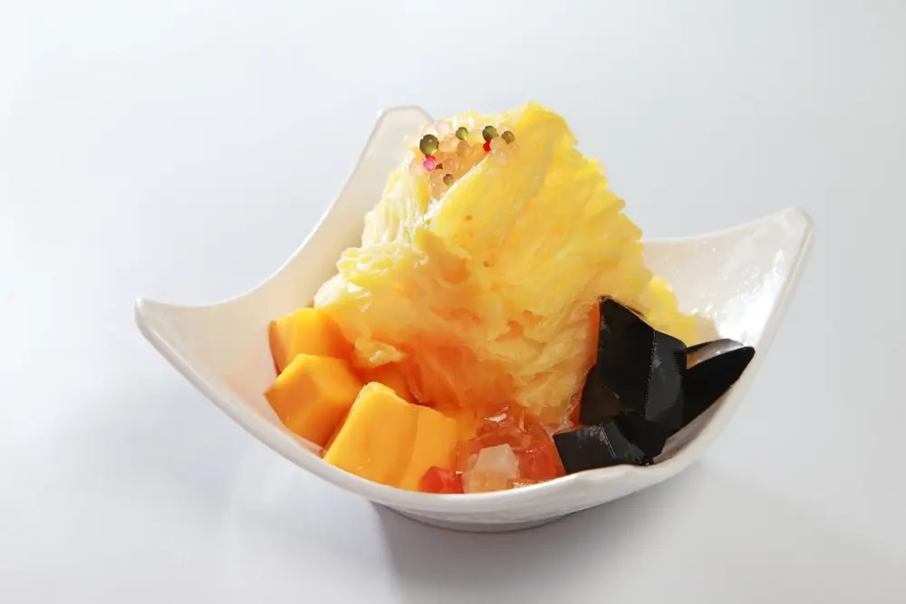

Articles / Tips & trends
Taiwanse snow ice – a fluffy delightul treat!
2023-10-29 · New products, New products

Have you heard of Taiwanese snow ice? This delightful dessert is very popular in Taiwan, thanks to its fluffy texture and its wide variety of toppings. In fact, one CNN article even listed it as one of the top 50 desserts worldwide!
Read on to learn more about this summer treat, and how to make it!

What is Taiwanese Snow Ice?
As its name implies, Taiwanese snow ice has its roots in shaved ice, namely Kakigori originating from Japan. In both Japan and Taiwan, people tuck into Kakigori flavoured with syrups, condensed milk, sweet beans and other toppings.
What makes snow ice different, however, lies in how the ice is made. Instead of water, the ice is made from a mixture of water and condensed milk instead.
The result? Fluffy flakes of ice that tastes like ice cream!
How to enjoy it
While the simplest type of snow ice would be plain (with just water and milk), many shops create variants by flavouring the ice with different flavours. Some popular flavours include fruits, chocolate, matcha and taro – much like ice cream!
Shave the frozen ice block into ice flakes with an ice-shaver, then drizzle on some condensed milk. Fancy some fruit or brown sugar? Try different types of syrups!

Top-class toppings!
Once you’ve had your shaved ice base ready, it’s time for the best part – toppings! Here are some popular, classic choices:
Fresh fruits
Since Taiwan is famous for its wide variety of fruits, it’s only natural that fresh fruit is the most popular topping here!
Many people swear by mango snow ice, a heaping mound of ice flakes topped with chunky mango and a generous dollop of ice cream.
Mango not your thing? Strawberries, Honeydew, Watermelon and Kiwi are all popular choices!
Beans and grains
Various sweet beans are common companions in both Japanese and Taiwanese desserts, and they’re certainly no strangers here!
Matcha shaved ice and red adzuki red beans, otherwise known as Uji Kintoki in Japan, are a classic combination.
Mung beans, Peanuts, Pearl Barley and various nuts are also great healthy choices!
Bubble tea toppings
Who says tapioca pearls are only for bubble tea? In fact, bubble tea is also a common flavour for snow ice! Simply flavour the ice base with milk tea, then top up with scoops of chewy boba.
Aside from tapioca pearls, taro pearls and grass jelly are also classic shaved ice toppings in Taiwan. Some even add cubed egg pudding for a caramel-y boost!
Want to give it a try? Normally it’ll take some time to get the ratio and consistency just right, but we make it easy for you with our flavoured powders! Here’s how it works:

Taiwanese snow ice
With its soft texture and creamy flavour, this is the perfect summer treat in Taiwan!
What you’ll need
How to prepare
Mix the snow ice powder with the hot water until dissolved and the mixture thickens
Pour into a container, then freeze until solid
Place the ice block onto the ice-shaving machine. Shave into flakes, and add syrups/toppings to taste. Enjoy!
Get started!
Ready to try out this sweet, refreshing treat? Pick up the ingredients, stock up on toppings and get to work!